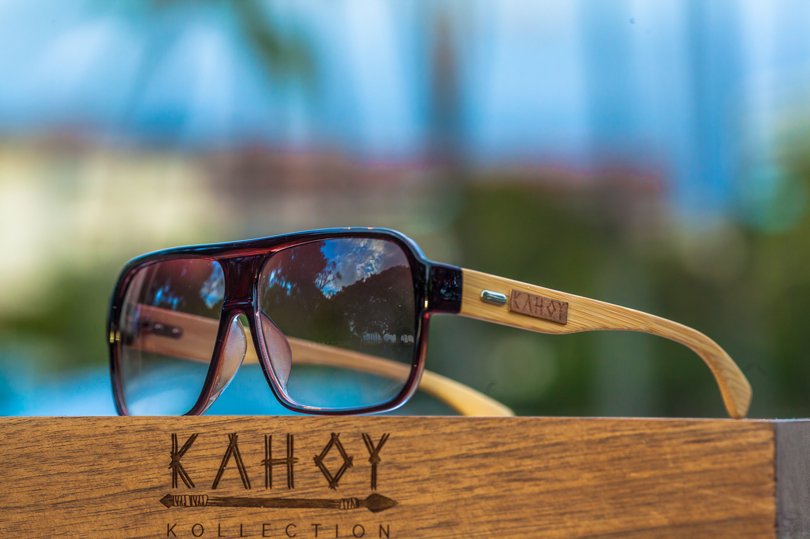

Who is Ray 2wice?
Photographer
Ray "2wice" Abad is a photograper and designer based out of the San Francisco bay area. He has been practicing photography since 2011 and has been designing graphics, event flyers and social media content for various brands and small businesses since 2008.His passion for taking photos was inherited from his late grandfather, Alessio Huelga, a master of underwater photography. Ray 2wice identifies beauty in a wide variety of settings. With no shortage of captivating sights in his hometown, he has also spent extended time in Hawaii and Australia and enjoys capturing a wide range of images: from urban streets to tranquil landscapes, from social gatherings to private shoots.

Graphic Designer
Ray 2wice started his journey in graphic design in high school in 1998 beginning with learning photo editing techniques in Photoshop. He later took courses at Cañada College and UC Berkeley in Photoshop, Photography and composition.
In 2021 he helped his wife, Dulce launch her company: Soul Kandy which produces candles, aromatherapy goods and self care kits for individual and group gifts. Dulce meticulously crafts the products by hand and Ray shoots the product photos and videos and creates content for events and social media.
In 2022 he wrote and illustrated his first children's book, "When I get Older", based on the life of his late grandfather Alessio Huelga. The book is composed of a variety of vibrant, colorful illustrations composited with photography by Alessio and Laurie Huelga. The book has been published in both English and in Spanish.
In 2023, Ray 2wice completed the Professional Certificate in Graphic Design at UC Berkeley extension where his studies focused on illustration, photo compositing, typography, layout and web design in the Adobe Creative Suite.
Kreative Director - Kahoy Kollection
 Since 2013 Ray 2wice has been acting as Kreative Director of Kahoy Kollection: a West-Coast based wooden eyewear brand where he shoots product and event photos and videos, and creates promotional content for social media
Ray 2wice has had the opportunity to travel to some of the world’s most exotic destinations including, Hawaii, Spain, Australia and New Zealand sharing their products with enthusiasts, musicians and influencers. Link: Kahoy Kollection